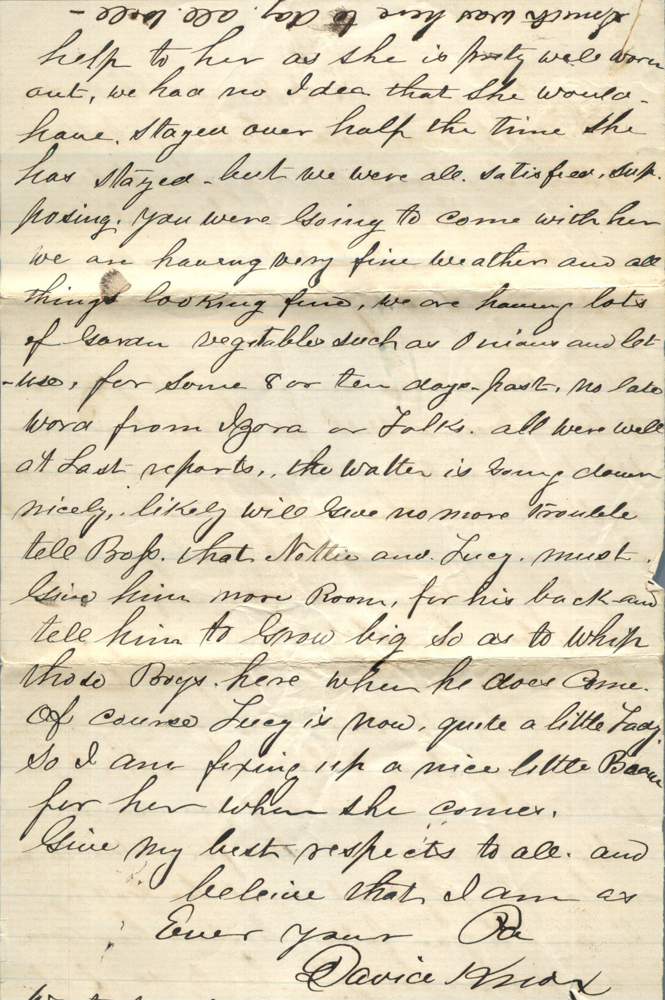
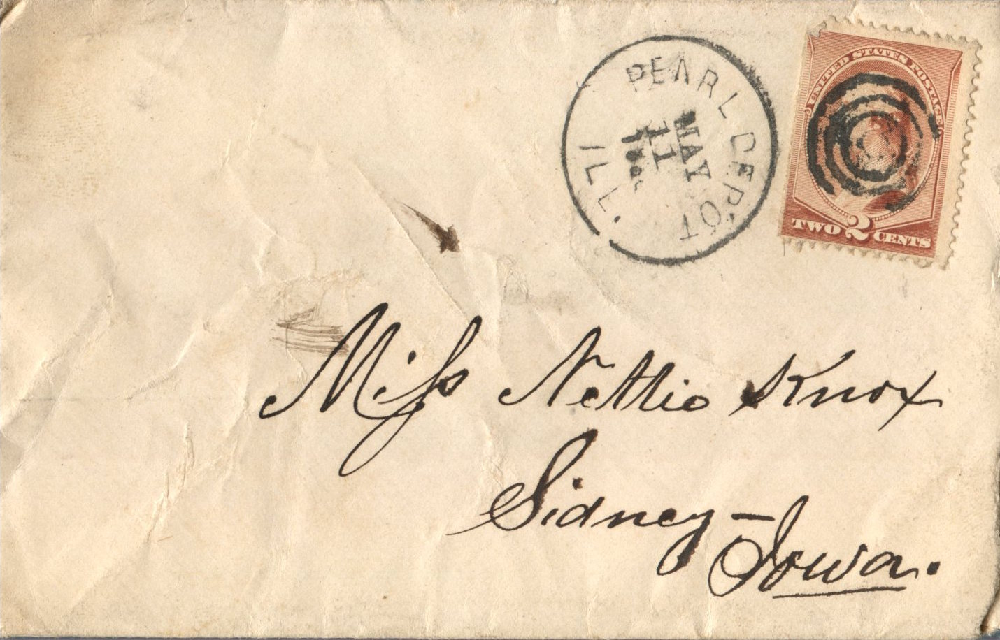
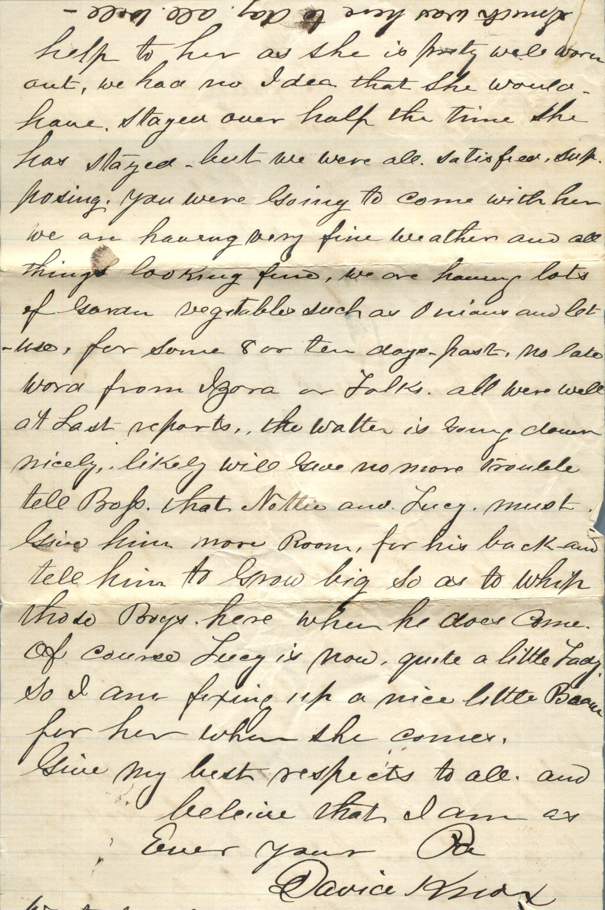
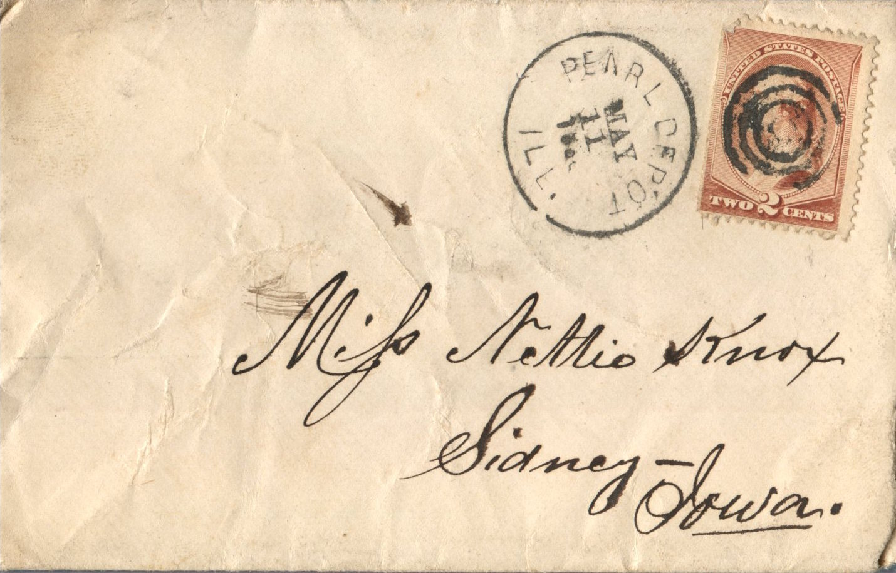

From: David Knox, To: Jeanette Knox Chandler and Family

 
From: David Knox, To: Jeanette Knox Chandler and Family Mailed From: Pearl, Illinois on May 11, 1886
Miss Nettie Knox Sidney - Iowa
Pearl May 8, 1886 Dear Nettie, Annie and Family, Your letter of the 5th received and was glad to hear from you to know of you being all well as this leaves us. I see by your letter and also from Willie's that you are having lots of rain. We are having fine weather here now, not one day since Easter to present plowing or work of dig kind. We had two heavy rains but both came in the night so it did not stop work in the least. Some farmers are done planting. Most about 1/2 done - the corn is coming up fine that is planted and what is looking fine, filled knee height, and fine looking. Fruit is promising all. Only peaches, which are winter killed. Gardens and garden truck look fine. We are having plenty of lettuce and onions coming in now and has been for 8 to 10 days ago. Some growing potatoes look fine 3 to 4 inches high. I do not think that I ever saw such grass or foliage on the trees at this time of year before. We are having delightful weather, as fine as you could wish and even better. The river is falling fast, the water will soon be off the low bottom. Some are now commencing to fill up the bottom, and think they are going to make good crops yet. I have not saw Smith or any of them since I wrote you I learn he is coping in the bottom. As usual he sent me word lately to get him if I could. A bush of broom corn left but I could not get it and sent him word. Lizzie Johnson is still here. Your Ma, Maggie, and her has lots to do. They have a girl called Kate Meginis now for a week helping while they are cleaning house. She is not an expert but does the best she can. Johnie is working on the section with Honan and doing very well. Horan think there never was such a fellow as he is. Still he has to work as other do. I had a letter from Willie same day I got yours. He gave me a full detail of your parties, said he was expecting you over Friday, to stay a day or two. Your Ma is at a loss to know why. You folks are not ready, or could say when you can start or intend to, of course I hate to say any word about your coming. Least Annie does not want too (or cannot make it commence to do so, without great inconvenience.) Hence I am loathe to insist, but it seems to me that the folks, their ought to be getting tired of your lengthy visit. It seems to me that I would not make the folks twice glad, once to see you come and once to see you leave. I do not know that this is the case, but it seems to me you ought to ask sometime. May 10 I will finish I went yesterday with Lew Shoustien to visit his folks at Belleview, has a nice time and a pleasant drive, and found Lewis pretty well fixed at home. Has nice property if he had it somewhere to be profitable, but it is like property in Monteguma or Florence , the day has past for such places. I have just got my commission from the governor for Police Magistrate, again, as I was reelected on last election after a big fight - made here by some miracle. Your Ma, Maggie, and Lizzie is having lots to do the last week or so. They have been cleaning house. They had for the last 2 weeks a girl named Kate Meginis helping. She has not much get up about her. We have the house pretty well filled but they keep coming and going, some 5 left today, but there may be 5 or 6 more wanting their place, in a day or two. You must say to Lucy that George is keeping his pants buttoned up and his face washed every day. Our short legged boy is still training so J.W. has better look a little better if he earns that candy. Yours, D.Knox
Also in letter: Dear Annie, G.R., and children, I drop this note there by Nettie's letter. I started to write you folks Saturday but failed to finish. I am not doing much but I am called away by someone every two or three minutes. I write this to say that we are somewhat disappointed and sorry that you seem to be so preoccupied with work so it is somewhat uncertain where you can make a start. Don't think that we are mad or offended at you, we do not want you to do anything to discontent yourself, or that would be a hardship to you, or any of you, of course we would like to see you all and all. But if there is conflicting elements in the way, so as to be a hardship to you we cannot insist, but if you cannot come I think it would be better for Nettie to come as her lengthy visit must be getting tiresome to you folks. Besides her Ma could find lots for her to do if at home that would be a great help to het as she is pretty well worn out, we had no idea that she would have stayed over half the time she has stayed. But we are all satisfied, supposing you were going to come with her. We are having very fine weather and all things looking fine. We are having lots of garden vegetables such as onions and lettuce, for some 8 or 10 despots. No late word from Izora or folks. All were all at last report. The water is going down nicely, likely will give no more trouble. Tell Bop. that Nettie and Lucy must give him more room, for his back and tell him to grow big so as to whip this boys here when he does come. Of course Lucy is now quite a little lady, so I am fixing up a nice little handkerchief for her when she comes. Give my best respects to all and believe that I am as ever your Pa David Knox Write soon Smith was here today. All well.
Also in letter: For Lucy and Johnie - Dear children, As I did not get Nettie's letter ready tamale yesterday. I will write you a little letter of your own. I will say to you if your Ma do not bring you down here pretty soon, I will send you a ticket so you can come yourself. Be sure you give your Ma no peace till she comes, I am afraid that Lucy will be so big that she will not know her Grand-Pa and the probability is I might not know you and I doubt whether I would know J.W. at all. Still I kind of think I would know you both. At any rate, I do not want you to be much longer coming least you all get out of my knowledges. Oh, Johnie you ought to see a nice little colt I have got for you to ride when you come, and you can loan it to Sister Lucy to ride once in a while. I know Lucy can borrow her Aunt Maggie's saddle, then she can ride about with George of course, Johnie will be boss of the colt, so Lucy will have to talk up her claim to J.W. but I think we can arrange it when you come. You will need a riding whip too. You may bet we will have a good time. You must write me what you think about it so I will have all fixed up when you get here. Love to you from your Grand-Pa. David Knox